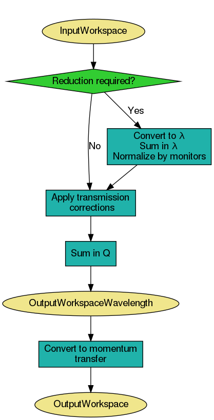
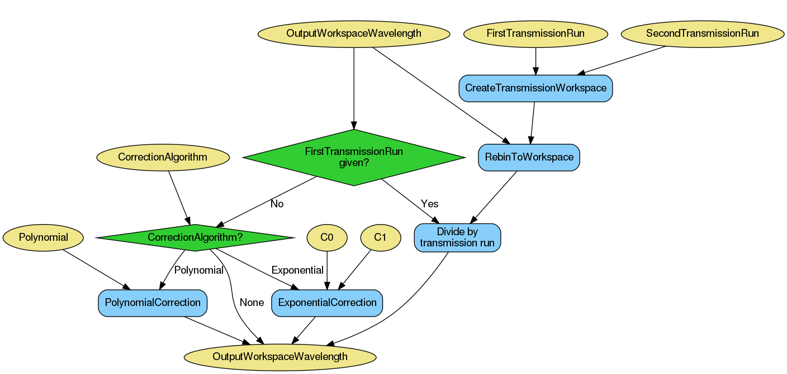
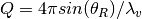
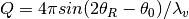

ReflectometryReductionOne dialog.
Table of Contents
Reduces a single TOF/Lambda reflectometry run into a mod Q vs I/I0 workspace. Performs monitor normalization and transmission corrections.
| Name | Direction | Type | Default | Description |
|---|---|---|---|---|
| InputWorkspace | Input | MatrixWorkspace | Mandatory | Run to reduce. |
| SummationType | Input | string | SumInLambda | The type of summation to perform. Allowed values: [‘SumInLambda’, ‘SumInQ’] |
| ReductionType | Input | string | Normal | The type of reduction to perform when summing in Q. Allowed values: [‘Normal’, ‘DivergentBeam’, ‘NonFlatSample’] |
| IncludePartialBins | Input | boolean | False | If true then partial bins at the beginning and end of the output range are included |
| ThetaIn | Input | number | Optional | Angle in degrees |
| ProcessingInstructions | Input | string | Mandatory | Grouping pattern on spectrum numbers to yield only the detectors of interest. See GroupDetectors for details. |
| WavelengthMin | Input | number | Mandatory | Wavelength minimum in angstroms |
| WavelengthMax | Input | number | Mandatory | Wavelength maximum in angstroms |
| I0MonitorIndex | Input | number | Optional | I0 monitor workspace index |
| MonitorBackgroundWavelengthMin | Input | number | Optional | Wavelength minimum for monitor background subtraction in angstroms. |
| MonitorBackgroundWavelengthMax | Input | number | Optional | Wavelength maximum for monitor background subtraction in angstroms. |
| MonitorIntegrationWavelengthMin | Input | number | Optional | Wavelength minimum for integration in angstroms. |
| MonitorIntegrationWavelengthMax | Input | number | Optional | Wavelength maximum for integration in angstroms. |
| NormalizeByIntegratedMonitors | Input | boolean | True | Normalize by dividing by the integrated monitors. |
| SubtractBackground | Input | boolean | False | If true then perform background subtraction |
| BackgroundProcessingInstructions | Input | string | These processing instructions will be passed to the background subtraction algorithm | |
| BackgroundCalculationMethod | Input | string | PerDetectorAverage | The type of background reduction to perform. Allowed values: [‘PerDetectorAverage’, ‘Polynomial’, ‘AveragePixelFit’] |
| DegreeOfPolynomial | Input | number | 0 | Degree of the fitted polynomial. |
| CostFunction | Input | string | Least squares | The cost function to be passed to the Fit algorithm. Allowed values: [‘Least squares’, ‘Unweighted least squares’] |
| FirstTransmissionRun | Input | MatrixWorkspace | First transmission run, or the low wavelength transmission run if SecondTransmissionRun is also provided. | |
| SecondTransmissionRun | Input | MatrixWorkspace | Second, high wavelength transmission run. Optional. Causes the FirstTransmissionRun to be treated as the low wavelength transmission run. | |
| Params | Input | dbl list | A comma separated list of first bin boundary, width, last bin boundary. These parameters are used for stitching together transmission runs. Values are in wavelength (angstroms). This input is only needed if a SecondTransmission run is provided. | |
| StartOverlap | Input | number | Optional | Start wavelength for stitching transmission runs together. Only used if a second transmission run is provided. |
| EndOverlap | Input | number | Optional | End wavelength (angstroms) for stitching transmission runs together. Only used if a second transmission run is provided. |
| ScaleRHSWorkspace | Input | boolean | True | Scale the right-hand-side or left-hand-side workspace. Only used if a second transmission run is provided. |
| TransmissionProcessingInstructions | Input | string | These processing instructions will be passed to the transmission workspace algorithm | |
| CorrectionAlgorithm | Input | string | None | The type of correction to perform. Allowed values: [‘None’, ‘PolynomialCorrection’, ‘ExponentialCorrection’] |
| Polynomial | Input | dbl list | Coefficients to be passed to the PolynomialCorrection algorithm. | |
| C0 | Input | number | 0 | C0 value to be passed to the ExponentialCorrection algorithm. |
| C1 | Input | number | 0 | C1 value to be passed to the ExponentialCorrection algorithm. |
| Debug | Input | boolean | False | Whether to enable the output of extra workspaces. |
| Diagnostics | Input | boolean | False | Whether to enable the output of interim workspaces for debugging purposes. |
| OutputWorkspace | Output | MatrixWorkspace | Output Workspace IvsQ. | |
| OutputWorkspaceWavelength | Output | MatrixWorkspace | Output Workspace IvsLam. Intermediate workspace. | |
| OutputWorkspaceTransmission | Output | MatrixWorkspace | Output transmissison workspace in wavelength | |
| OutputWorkspaceFirstTransmission | Output | MatrixWorkspace | First transmissison workspace in wavelength | |
| OutputWorkspaceSecondTransmission | Output | MatrixWorkspace | Second transmissison workspace in wavelength |
This algorithm is not meant to be used directly by users. Please see ReflectometryReductionOneAuto v3 which is a facade over this algorithm.
This algorithm reduces a single reflectometry run into a mod Q vs I/I0 workspace.
The mandatory input properties, WavelengthMin, WavelengthMax
and ProcessingInstructions, must be manually set by the user. In addition, for
the algorithm to be able to convert from wavelength to momentum transfer correctly,
instrument components, specially detectors, must be located at the correct positions.
The expected experimental setup for the algorithm to produce correct results is
shown below, where the angle between the beam direction and the sample-to-detector
vector must be  .
.

The figure below displays a high-level workflow diagram illustrating the main steps taking place in the reduction. For the sake of clarity, all possible steps are illustrated, even if some of them are optional.
First, the algorithm checks the X units of the input workspace. If the input workspace is already in wavelength, summation and normalization by monitors and direct beam are not performed, as it is considered that the input run was already reduced using this algorithm.
If summation is to be done in wavelength, then this is done first. The the
conversion to wavelength and normalisation by monitors and direct beam is done,
followed by the transmission correction. Transmission correction is always
done, even if the input was already in wavelength. The resulting workspace is
cropped in wavelength according to WavelengthMin and
WavelengthMax, which are both mandatory properties.
If summation is to be done in Q, this is done after the normalisations and cropping, but again, only if the reduction has not already been done.
Finally, the output workspace in wavelength is converted to momentum transfer (Q).
If summing in wavelength, detectors of interest are extracted and summed in TOF
using GroupDetectors v2 with ProcessingInstructions as input. (If
summing in Q, summation is not done yet as it is done in a later step after all
normalisations have been done.) The workspace is then converted to wavelength
with AlignBins set to True.
Next, normalization by direct beam and monitors is optionally done using Divide v1. A summary of the steps is shown in the workflow diagram below.

Direct Beam and Monitor corrections can be applied to the workspace. These are both optional steps and will only take place if the required inputs are provided - otherwise, these steps will be skipped.
The region of direct beam is extracted from the input workspace in TOF using
GroupDetectors v2 with RegionOfDirectBeam as input. This is only
done if RegionOfDirectBeam is specified. The resulting workspace is
converted to wavelength with AlignBins set to True.

Monitors are extracted from the input workspace in TOF using
CropWorkspace v1 with I0MonitorIndex as input. The resulting
workspace is converted to wavelength with AlignBins set to
True. Monitor normalisation is only done if I0MonitorIndex,
MonitorBackgroundWavelengthMin and MonitorBackgroundWavelengthMax are
all specified.
Normalisation can be done by integrated monitors by setting
NormalizeByIntegratedMonitors to true, in which case
MonitorIntegrationWavelengthMin and
MonitorIntegrationWavelengthMax are used as the integration
range. If monitors are not integrated, detectors are rebinned to monitors using
RebinToWorkspace v1 so that the normalization by monitors can take
place.

Transmission corrections can be optionally applied to the workspace resulting from the previous step. Transmission corrections can be either specified via transmission runs or specific correction algorithms.
When normalizing by transmission runs, i.e. when one or two transmission runs are given, the spectrum numbers in the transmission workspaces must be the same as those in the input run workspace. You can pass individual processing instructions to the transmission runs.
When normalizing by transmission run, this algorithm will run
CreateTransmissionWorkspace v2 as a child algorithm, with properties WavelengthMin,
WavelengthMax, I0MonitorIndex, MonitorBackgroundWavelengthMin,
MonitorBackgroundWavelengthMax, MonitorIntegrationWavelengthMin,
MonitorIntegrationWavelengthMax, and ProcessingInstructions.
In addition, when both FirstTransmissionRun and SecondTransmissionRun
are provided the stitching parameters Params, as well as StartOverlap and
EndOverlap will be used by CreateTransmissionWorkspace v2 to create the
transmission workspace that will be used for the normalization.
If no transmission runs are provided, then algorithmic corrections can be
performed instead by setting CorrectionAlgorithm to either
PolynomialCorrection or ExponentialCorrection, the two
possible types of corrections at the moment. If PolynomialCorrection,
is selected, PolynomialCorrection v1 algorithm will be run, with this
algorithm’s Polynomial property used as its Coefficients
property. If the CorrectionAlgorithm property is set to
ExponentialCorrection, then the ExponentialCorrection v1
algorithm is used, with C0 and C1 taken from the C0 and C1
properties.
If summing in Q, the summation is done now, after all normalisations and
cropping have been done. As with summation in  , the summation is
only done if the reduction has not already been done.
, the summation is
only done if the reduction has not already been done.
The summation is done using the algorithm proposed by Cubitt et al
(J. Appl. Crystallogr., 48 (6) (2015)). This involves a projection to an
arbitrary reference angle,  , with a “virtual” wavelength,
, with a “virtual” wavelength,
 . This is the wavelength the neutron would have had if it had
arrived at with the same momentum transfer (
. This is the wavelength the neutron would have had if it had
arrived at with the same momentum transfer ( ).
).
Counts are considered to be spread evenly over the input pixel, and the
top-left and bottom-right corner of the pixel are projected onto
giving a range in to project onto. Counts
are shared out proportionally into the output bins that overlap this range, and
the projected counts from all pixels are summed into the appropriate output
bins.
The resulting 1D workspace in at becomes
the output workspace in wavelength.
The IncludePartialBins property specifies how the range
should be calculated from the input range  (which
corresponds to
(which
corresponds to WavelengthMin, WavelengthMax). If IncludePartialBins
is false (default) then we use the projection to the strictly-cropped range
 . This excludes any counts from the
orange-shaded triangles shown in the figure, for which we may only have partial
information because counts from the red shaded triangles are outside the
specified lambda range.
. This excludes any counts from the
orange-shaded triangles shown in the figure, for which we may only have partial
information because counts from the red shaded triangles are outside the
specified lambda range.
If IncludePartialBins is true then the algorithm will use the full
projected range  . This will include all
counts from the input range
. This will include all
counts from the input range  , but may result in
partially-filled bins for counts contributed from the orange-shaded regions if
data is not available in the red-shaded regions. Note however that if the red
regions do contain counts then they will still be included, e.g. if you have
narrowed the range
, but may result in
partially-filled bins for counts contributed from the orange-shaded regions if
data is not available in the red-shaded regions. Note however that if the red
regions do contain counts then they will still be included, e.g. if you have
narrowed the range WavelengthMin, WavelengthMax from the available
range for the instrument then the red regions may contain valid counts.
Finally, the output workspace in wavelength is converted to momentum transfer
() using ConvertUnits v1. The equation used is
 in the non-flat sample case or
 in the divergent beam
case. This is because the latter needs to take into account the divergence of
the beam from the assumed direct beam direction.
Note that the output workspace in Q is a workspace with native binning, and no rebin step is applied to it. If you wish to obtain a rebinned workspace in Q you should consider using algorithm ReflectometryReductionOneAuto v3 instead, which is a facade over this algorithm and has two extra steps (Rebin v1 and Scale v1) to produce an additional workspace in Q with specified binning and scale factor. Please refer to ReflectometryReductionOneAuto v3 for more information.
This is version 2 of the algorithm. For version 1, please see here.
Example - Reduce a run
run = Load(Filename='INTER00013460.nxs')
# Basic reduction with no transmission run
IvsQ, IvsLam = ReflectometryReductionOne(InputWorkspace=run,
WavelengthMin=1.0,
WavelengthMax=17.0,
ProcessingInstructions='4',
I0MonitorIndex=2,
MonitorBackgroundWavelengthMin=15.0,
MonitorBackgroundWavelengthMax=17.0,
MonitorIntegrationWavelengthMin=4.0,
MonitorIntegrationWavelengthMax=10.0)
print("{:.4f}".format(IvsLam.readY(0)[533]))
print("{:.4f}".format(IvsLam.readY(0)[534]))
print("{:.4f}".format(IvsQ.readY(0)[327]))
print("{:.4f}".format(IvsQ.readY(0)[328]))
Output:
0.0003
0.0003
0.0003
0.0003
Example - Reduce a run and normalize by transmission workspace
run = Load(Filename='INTER00013460.nxs')
trans1 = Load(Filename='INTER00013463.nxs')
trans2 = Load(Filename='INTER00013464.nxs')
# Basic reduction with two transmission runs
IvsQ, IvsLam, TRANS = ReflectometryReductionOne(InputWorkspace=run,
WavelengthMin=1.0,
WavelengthMax=17.0,
ProcessingInstructions='4',
I0MonitorIndex=2,
MonitorBackgroundWavelengthMin=15.0,
MonitorBackgroundWavelengthMax=17.0,
MonitorIntegrationWavelengthMin=4.0,
MonitorIntegrationWavelengthMax=10.0,
FirstTransmissionRun=trans1,
SecondTransmissionRun=trans2)
print("{:.4f}".format(IvsLam.readY(0)[480]))
print("{:.4f}".format(IvsLam.readY(0)[481]))
print("{:.4f}".format(IvsQ.readY(0)[107]))
print("{:.4f}".format(IvsQ.readY(0)[108]))
Output:
0.4597
0.4654
0.7203
1.0512
Categories: AlgorithmIndex | Reflectometry
C++ header: ReflectometryReductionOne2.h (last modified: 2020-02-21)
C++ source: ReflectometryReductionOne2.cpp (last modified: 2020-02-21)